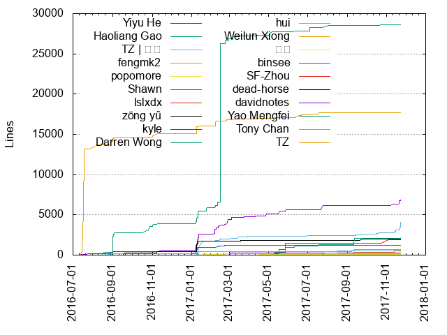
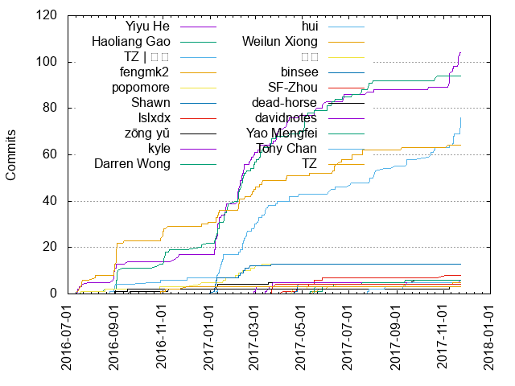

Authors
| Author | Commits (%) | + lines | - lines | First commit | Last commit | Age | Active days | # by commits |
|---|
| Yiyu He | 104 (20.39%) | 6879 | 4475 | 2016-07-13 | 2017-11-22 | 497 days, 3:07:20 | 63 | 1 |
| Haoliang Gao | 94 (18.43%) | 28576 | 28826 | 2016-07-17 | 2017-10-24 | 463 days, 21:25:00 | 67 | 2 |
| TZ | 天猪 | 76 (14.90%) | 4054 | 2150 | 2016-08-24 | 2017-11-23 | 455 days, 23:40:40 | 57 | 3 |
| fengmk2 | 64 (12.55%) | 17721 | 3361 | 2016-07-13 | 2017-11-06 | 481 days, 10:46:02 | 44 | 4 |
| popomore | 13 (2.55%) | 211 | 14 | 2016-07-17 | 2017-03-10 | 235 days, 21:53:45 | 13 | 5 |
| Shawn | 13 (2.55%) | 1246 | 49 | 2017-01-07 | 2017-03-22 | 73 days, 20:01:53 | 10 | 6 |
| lslxdx | 8 (1.57%) | 1934 | 14 | 2017-04-06 | 2017-11-03 | 211 days, 0:18:20 | 6 | 7 |
| zōng yǔ | 6 (1.18%) | 2006 | 527 | 2016-09-19 | 2017-09-25 | 370 days, 10:45:22 | 6 | 8 |
| kyle | 6 (1.18%) | 7 | 7 | 2017-03-14 | 2017-11-22 | 252 days, 14:59:20 | 5 | 9 |
| Darren Wong | 6 (1.18%) | 2052 | 6 | 2017-05-11 | 2017-09-12 | 123 days, 16:10:59 | 5 | 10 |
| hui | 5 (0.98%) | 681 | 5 | 2017-01-09 | 2017-09-15 | 248 days, 19:51:57 | 5 | 11 |
| Weilun Xiong | 5 (0.98%) | 574 | 22 | 2017-05-14 | 2017-11-13 | 182 days, 19:57:50 | 5 | 12 |
| 仙森 | 4 (0.78%) | 104 | 2 | 2017-04-17 | 2017-06-14 | 57 days, 18:03:11 | 4 | 13 |
| binsee | 4 (0.78%) | 40 | 20 | 2017-04-22 | 2017-04-26 | 3 days, 1:40:48 | 3 | 14 |
| SF-Zhou | 4 (0.78%) | 41 | 39 | 2017-03-22 | 2017-03-28 | 5 days, 6:17:48 | 3 | 15 |
| dead-horse | 3 (0.59%) | 30 | 3 | 2016-08-31 | 2017-11-08 | 434 days, 13:07:39 | 3 | 16 |
| davidnotes | 3 (0.59%) | 237 | 1 | 2017-02-28 | 2017-03-02 | 2 days, 22:43:12 | 3 | 17 |
| Yao Mengfei | 3 (0.59%) | 5 | 5 | 2017-05-17 | 2017-05-17 | 22:34:31 | 1 | 18 |
| Tony Chan | 3 (0.59%) | 563 | 0 | 2017-07-25 | 2017-08-17 | 22 days, 21:33:35 | 3 | 19 |
| TZ | 3 (0.59%) | 33 | 3 | 2016-10-29 | 2016-12-03 | 34 days, 20:06:29 | 3 | 20 |
These didn't make it to the top: Rwing, Matt Ma, Desen Meng, Adams, vincent.hou, trey, Minqi Pan, Kiho Cham, Jing Cui, Eward Song, 饶培泽, 悖论, 当轩, 周长安, 三点, zhennann, xianyu, xeodou, waiting, tangyao, sharp-c, mansonchor, m31271n, luxuc, luicfer, kaiye, jtyjty99999, johnnychen, jethro, jemmy zheng, hyj1991, hansen, gxcsoccer, freebyron, dongxu, cuyl, chenyancheng, chenbin92, Zhongyuan, Yu Qi, XWang1024, Wade Deng, Tomatoo, Tao, SuperEwe, SimMan, Ruanyq, Poker, NatPi, Mars Wong, Luobo Zhang, Jerry Wu, Jawnkuin, Jason Lee, Jackson Tian, Hengfei Zhuang, HC Chen, Freax, Eli Yao, DanielLam, Colin Cheng, Chikara Chan, Chen Yangjian, Brian175, BingqiChen, BingqiChan, BccSafe, AnzerWall, Anto
Only top 20 authors shown
Only top 20 authors shown
| Month | Author | Commits (%) | Next top 5 | Number of authors |
|---|
| 2017-11 | Yiyu He | 15 (39.47% of 38) | TZ | 天猪, vincent.hou, lslxdx, kyle, freebyron | 12 |
| 2017-10 | TZ | 天猪 | 5 (55.56% of 9) | Haoliang Gao, 悖论, Yiyu He | 4 |
| 2017-09 | hui | 3 (20.00% of 15) | TZ | 天猪, zōng yǔ, waiting, vincent.hou, gxcsoccer | 11 |
| 2017-08 | TZ | 天猪 | 5 (55.56% of 9) | hyj1991, Yiyu He, Tony Chan, Haoliang Gao | 5 |
| 2017-07 | Haoliang Gao | 6 (26.09% of 23) | fengmk2, TZ | 天猪, Tony Chan, hansen, Yiyu He | 11 |
| 2017-06 | fengmk2 | 6 (18.18% of 33) | Haoliang Gao, Yiyu He, TZ | 天猪, Eward Song, 当轩 | 17 |
| 2017-05 | Haoliang Gao | 9 (23.08% of 39) | Yiyu He, lslxdx, Yao Mengfei, Darren Wong, Weilun Xiong | 19 |
| 2017-04 | Yiyu He | 7 (25.93% of 27) | binsee, lslxdx, TZ | 天猪, 仙森, fengmk2 | 11 |
| 2017-03 | TZ | 天猪 | 11 (16.67% of 66) | Haoliang Gao, Yiyu He, kyle, fengmk2, SF-Zhou | 24 |
| 2017-02 | Yiyu He | 21 (26.92% of 78) | Haoliang Gao, TZ | 天猪, fengmk2, Shawn, popomore | 14 |
| 2017-01 | Yiyu He | 22 (27.50% of 80) | Haoliang Gao, TZ | 天猪, Shawn, fengmk2, zōng yǔ | 19 |
| 2016-12 | Haoliang Gao | 3 (33.33% of 9) | popomore, fengmk2, TZ | 天猪, TZ | 5 |
| 2016-11 | Haoliang Gao | 6 (37.50% of 16) | fengmk2, Yiyu He, zōng yǔ, TZ | 5 |
| 2016-10 | TZ | 天猪 | 2 (25.00% of 8) | Haoliang Gao, popomore, fengmk2, TZ, Hengfei Zhuang | 6 |
| 2016-09 | fengmk2 | 10 (40.00% of 25) | Haoliang Gao, Yiyu He, zōng yǔ, dead-horse, TZ | 天猪 | 6 |
| 2016-08 | fengmk2 | 7 (31.82% of 22) | Yiyu He, TZ | 天猪, Matt Ma, popomore, luxuc | 8 |
| 2016-07 | fengmk2 | 6 (46.15% of 13) | Yiyu He, popomore, Haoliang Gao | 4 |
| Year | Author | Commits (%) | Next top 5 | Number of authors |
|---|
| 2017 | Yiyu He | 87 (20.86% of 417) | Haoliang Gao, TZ | 天猪, fengmk2, Shawn, popomore | 86 |
| 2016 | fengmk2 | 31 (33.33% of 93) | Haoliang Gao, Yiyu He, TZ | 天猪, popomore, TZ | 11 |
| Domains | Total (%) |
|---|
| gmail.com | 214 (41.96%) |
|---|
| qq.com | 111 (21.76%) |
|---|
| users.noreply.github.com | 98 (19.22%) |
|---|
| fengmk2.com | 40 (7.84%) |
|---|
| 163.com | 18 (3.53%) |
|---|
| hotmail.com | 7 (1.37%) |
|---|
| 126.com | 7 (1.37%) |
|---|
| xue.bi | 3 (0.59%) |
|---|
| rwing.cn | 3 (0.59%) |
|---|
| live.cn | 2 (0.39%) |
|---|